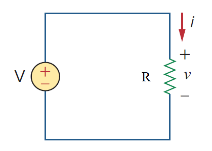

Example 2.1
Slide P17
歐姆定律與電導
電熨斗等效電阻計算
某電熨斗在 $120\text{ V}$ 電壓下運作，消耗電流為 $2\text{ A}$。試計算其內部加熱元件之等效電阻值 $R$。
An electric iron draws 2 A at 120 V. Find its resistance R.

原教材電路圖 · Slide P17
🎯 求解目標：求電阻 $R$
先在計算紙上演練，再對解答
📝 詳細推導過程與標準解答 ▼
逐步解析：
- 1. 歐姆定律基本關係式： 導體兩端電壓與流經電流成正比，即 $v = i R$。
- 2. 移項計算電阻值： $$R = \frac{v}{i} = \frac{120\text{ V}}{2\text{ A}} = 60\ \Omega$$
✅ 標準答案：
$$R = 60\ \Omega$$